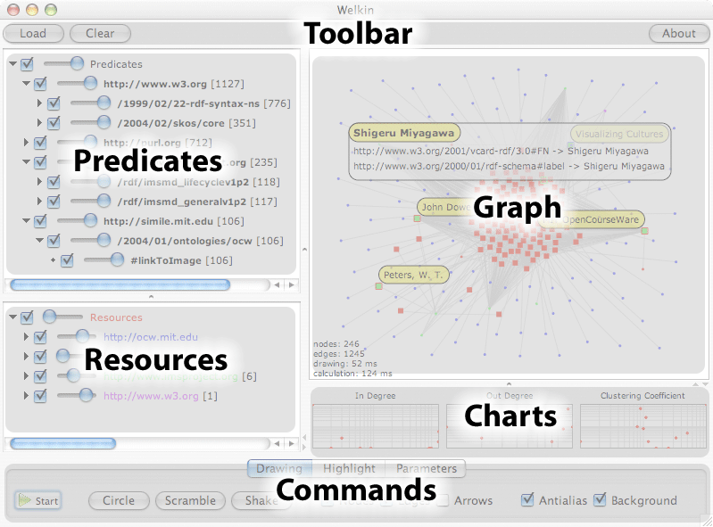
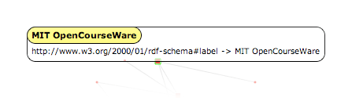
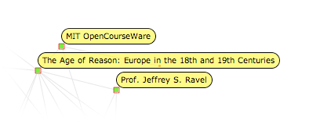
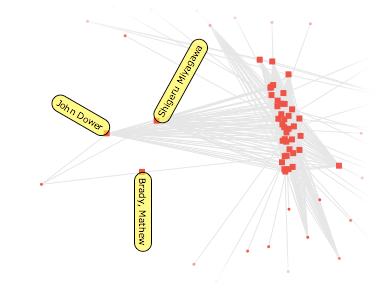
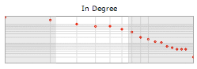

Welkin is an archaic english term to define the celestial sphere, the apparent surface of the imaginary sphere on which celestial bodies appear to be projected (kudos to Jessica Klein for suggesting it to us).
The reference to the sky and celestial bodies is very meaningful in this context: Welkin is not meant to be a tool to discover a single RDF statement out of a thousands, but it's meant as a "telescope" for your RDF data, a tool that lets you understand its global shape and cluster characteristics rather than the individual item.
So, if you are thinking about using Welkin as a flashy and sexy frontend tool for your dataset, think again: end users don't care about obtaining a mental picture of an entire dataset, but care more about the extreme locality. They don't care about your galaxy, they want to find the planet that has enough air for them to survive! If that's what you are looking for, the Longwell facetted and textual browser is probably what you want.
Welkin is not designed as a tool for end users, it's thought for an audience of data and metadata analysts (not necessarily RDF-savvy!) that need to:
Let's look at a screenshot of the Welkin User Interface, this time outlining the various panes:

This screenshot was taken on MacOSX. Since java has pluggable look&feel, the look of Welkin on your platform might be different, but don't worry, the panes and buttons will be in the same position and the would have the same exact functionality (or, if not, it's a bug and please, report it to us).
The toolbar contains three buttons:
When a model is loaded, you can keep adding new statements to the loaded model by loading other ones. This is very useful to merge different models and see if/how they connect.
The graph pane is the main Welkin pane and where the model visualization takes place. The Welkin Graph canvas is highly interactive. We believe that fast and immediate interactivity is the key for a better understanding of a very complex model, rather than panning and zooming on statically drawn graphs.
When the RDF memory model is empty, the graph pane doesn't show anything. By using the Load button in the toolbar above, you can load statements from files on your disk (we plan to introduce the ability to connect to Sparql web services once the protocol gets finalized).
Once RDF statements are loaded in memory, Welkin represents them as dots and lines, placing them at, initially, at random locations.
To reduce clutter, Welkin does not display literals as nodes, but rather presents them in a box as soon as you click the note that you are interested in. Literals can never be subjects of RDF statements, therefore they always represent leaves of the graph, which we believe do not add any useful topological information to the visualization and just add clutter. This also means that if your RDF model does not contains statements with predicates that link two resources, you will see disconnected nodes, even if there are literals hanging off of them.
Dots can have two different shapes, depending on whether or not they are used as subjects in any of the statements currently loaded in memory: a small dot represents a resource that is used only as an object, a larger dot represents a resource that is used at least once as a subject. The reason behind this visualization is, again, to reduce clutter: object nodes are normally more numerous and, in the sense, that they are just referenced by the loaded model, as only subject nodes are actually described in the mode. Small dots might turn into larger dots if new statements are loaded that use that node as a subject.
In case there are two different predicates between the same resources, Welkin displays only one line. We plan to research ways to visualize multiple predicates in a way that is efficient in both performance and visualization effectiveness. Also note how the predicates are not shown on the graph display. We also plan to work on efficient ways to allow mouseover-like effects to visualize the predicate values in the future.
RDF models are directed graphs, but for performance reason Welkin defaults with the direction arrows of the predicates turned off. To turn it on, check the Arrows check-box in the Drawing tab of the Commands bar at the bottom of the Welkin screen. (see more about the drawing commands and options below)
The graph panel reacts to mouse clicks. There are three events that it currently recognizes, each with a different effect:

rdf:label or resource URI gets shown even when the mouse button is not pressed and that the node is no longer free to move along the graph canvas but it's hold in place by the click. Another double-click releases the node and returns it to the original floating state.

The commands are divided in three tabs:
The time taken to calculate the graph grows with the square of the number of nodes, this means that doubling the node number reduces the refreshing rate by 4 times, not 2! We plan to work hard to fix this severe limitation (and we know how) but for now be aware of this problem and don't go crazy with loading RDF models that contain more than a few thousand nodes resources (don't worry about literals, they don't slow down).
By default, Welkin introduces a 50ms delay between frames. While counterintuitive, experience has shown that reducing this time makes the overall drawing efficiency smaller. Your mileage may vary, so try to lower it and see what happens, but don't be surprised if the system doesn't speed up.
Another important design decision for Welkin was to be completely agnostic and neutral about the ontologies used by the RDF model. The only exception is rdf:label which literal, if present, is used as a representation of a resource (or predicate) instead of its URIs.
URIs are opaque identifiers, and, in theory, should not bear any structural information inside of them. In practice, however, they do. We decided to try to parse the URIs that start with protocols identifiers that we understand and create a tree out of them.
The result of this heuristical facetted projection of URIs is contained in this panel. Each predicate contained in the loaded RDF model is shown, grouped by their URIs common prefixes and tokens and two widgets are associated with each of them:
The number in between the square brackets represents the amount of times the predicate (or group of them) is used in the current loaded RDF model.
Sometimes, instead of focusing on the relationships between resource, you want to focus on the resources themselves. This is the panel that allows that. Again, two widgets perform actions on the relative URI:
We found this compact representation of the URI schemes used by the loaded model (both for predicates and for resources) very valuable in uncovering mistakes and/or misspelling of the URI.
One of the things that drew us to write something like Welkin was the intuition that a lot of information about the graph was passing unnoticed because we were normally browsing an RDF model by looking at the single nodes individually or by projecting them onto a particular dimension (for example, whether or not they contained a link to a particular literal).
We believed that by looking at the distribution of particular properties of the nodes in the graph, we could spot particular sections of our model that could result to be interesting for a particular reason.
There are three graph-theoretical properties of a node that Welkin understands:
The charts have a logarithmic scale on both sides, since most graph distributions encountered in real life tend to have a pretty long tail (meaning that a lot of nodes have low degrees and a very small number of them has a high degree).
The charts visualize the distribution of the node properties of the graph that is currently visible, not of the one that is currently loaded in memory. This allows more interactive exploration of the graph.
The chart is also reactive: by dragging the right and left bars, you can select a 'range' of nodes that should be visible, while the rest of the nodes get hidden. This is very useful to explore only parts of the graph that exhibit particular distribution properties.
As the following screenshot visualizes, the dots in the grayed-out area represent the nodes that are hidden from the chart based on their in-degree distribution.
